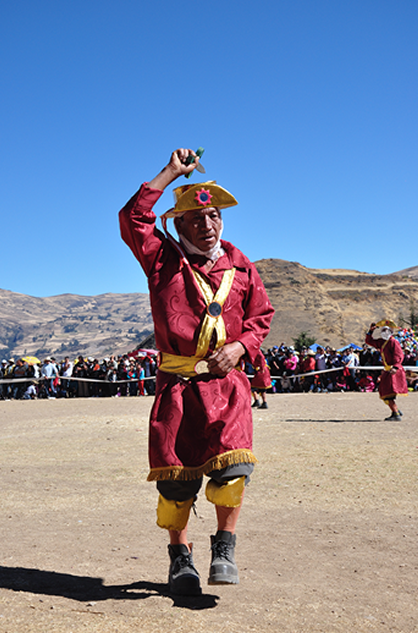

FIESTA PATRONAL DEL APOSTOL SANTIAGO
La grandiosa fiesta para Santiago de Chuco es el 25 de julio. Se trata del día central
de la festividad en honor al glorioso Apóstol Santiago “El Mayor”, patrón tutelar de la provincia.
Así viene sucediendo a partir de similar fecha del calendario desde 1610, cuando se fundó la ciudad,
la tradición lo confirma en el lapso de casi cuatro siglos.
La segunda mitad del mes de julio y primeros días de agosto de todos los años se lleva a cabo el secular
homenaje al santo patrón. Son días pletóricos de unción entrega filial, salmos y plegarias.
En la escena estarán los pallos brindando su arte plasmados en varonil danza saludando al apóstol
con su arrogancia y pundonor. Serán acompañados en su carismático afán por los demás conjuntos
folcklóricos del lugar, decididos y voluntariosos compitiendo en atuendos, música, cánticos,
movimientos y desfile por las calles de la miscelánea preciosa para observar, analizar y aplaudir.
Además de disfrutar observar vistosos fuegos artificiales y asistir a bailes sociales.
Donde la mayoria de las personas santiaginas vienen desde otros lugares ya que ellos son de voto al
Apóstol.

DANZA EL PALLO DE SANTIAGO DE CHUCO
La danza los Pallos, se realiza en Santiago de Chuco, capital de la provincia y el distrito
del mismo nombre, en la zona andina de la región La Libertad.
Esta danza los Pallos se representa con ocasión de la celebración del patrón local de Santiago de Chuco,
apóstol Santiago el Mayor, cuya festividad se realiza entre el 15 de julio y el 2 de agosto, siendo
los días más importantes del 23 al 25 de julio, parte de la celebración que es llamada también
fiesta de los forasteros por la presencia masiva de pobladores venidos de otras localidades de la
provincia; y el 26 de julio, inicio de la octava, última parte de la fiesta. Siendo fiesta principal
de la provincia, participan en ella una gran variedad de comparsas de baile, conocidas localmente como
mojigangas.
La mayor parte de estas proviene del distrito de Santiago de Chuco, y algunas de ellas, como la de los
Pallos, tienen variantes en este y otros distritos de la provincia.
El 23 de julio es el día del alba o novenario, acto de recibimiento del apóstol Santiago, representado
por un devoto que, montado en un caballo blanco, y portando una pequeña imagen del Santo; parte del sitio
llamado El Cerrillo hacia la ciudad, pasando por una antigua ruta inca, y acompañado por diversas mojigangas
como las quiyaya o pallas, los indios, los negritos y los Pallos, quienes hacen su entrada asumiendo el papel
protagónico.

ven visitanos nuestra tierra de santiago de chuco y disfruta de sus lindas
tradiciones te va a encantar te resiviremos con mucho aprecio.